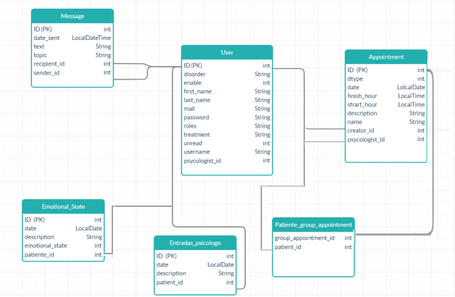

Leeme: Universidad Complutense Mental Health (UCMH)
Objetivo
Proyecto de ingeniería web que simula un gestor de una consulta de psicología.
Entre sus funcionalidades principales están:
- Gestión de citas: Puedes pedir citas a tu psicólogo o participar en las terapias grupales que van haciendo los psicólogos. Gestiona tus citas con un intuitivo horario y envía mensajes a los usuarios de la aplicación y a través de grupos
- Gestión eficiente de grupos: Los psicólgoos pueden controlar sus paciente de una manera ágil y eficiente, así como hacer un seguimiento de los mismos. También se pueden poner citas grupales en la plataforma.
- Controla tus estados de ánimo: ¿Cómo te encuentras hoy? ¿Estás feliz? ¿O quizás triste? Haz un seguimiento de tu estado de ánimo desde la aplicación de UCMH para saber como te encuentras mes a mes.
Soporta los siguientes roles:
-
El administrador (usuario: a, clave: aa) podrá añadir, eliminar, modificar y bloquear (inhabilitar durante un tiempo) los perfiles de los demás usuarios. También podrá cambiar a los pacientes de psicologo que así lo hayan solicitado. Este se asignará aleatoriamente.
-
Un psicólogo (usuario: b, clave aa) podrá crear, modificar y eliminar citas grupales. También podrá añadir a un grupo de sus pacientes a esas citas. Asimismo podrá ver las estadísticas de sus pacientes en una lista (estado de animo y descripción de cómo se sienten). Por último, a modo de consulta, podrá realizar entradas describiendo la evolución de sus pacientes además de anotar sus diagnósticos y tratamientos.
-
Un paciente (usuario: c, clave aa) podrá añadir, eliminar y modificar citas individuales, acceder al calendario de estadísticas donde podrá guardar su progreso (estado de ánimo y descripción de cómo se siente). Además, podrán solicitar un cambio de psicólogo al administrador.
Por útimo todos los usuarios podrán visualizar y editar los datos de su perfil (nombre, apellidos, nombre de usuario, contraseña y foto de perfil). Además podrán enviar y recibir mensajes individuales y los usuarios participantes en una cita grupal se suscribirán a un grupo donde también podrán enviar y recibir mensajes a los participantes de discho grupo.
Base de datos
Generado con Creately;

Vistas
- Inicio: Vista inicial. En ella podemos ver las funcionalidades principales de la aplicación: gestión de citas, control de estados de ánimo y gestión eficiente de grupos. En ella vemos el botón para iniciar sesión.
- Login: Página para el inicio de sesión de los usuarios. Deben introducir su nombre de usuario y contraseña.
- Administrador: Página principal para el usuario administrador. Desde ella se puede hacer una búsqueda de usuarios filtrando por nombre de usuario, email y nombre. Por otra parte, hay tres listas, psicólogos, pacientes, administradores y usuarios. En cada una de las listas se muestran los usuarios con ese roll. A la derecha de los datos de cada usuario se muestran varios botones con los que el administrador podrá desarrollar sus funciones.
- Estadísticas del paciente: Se muestra un calendario de estadisticas del paciente. Se puede interactura con este calendario pinchando en un día anterior a la fecha actual y añadiendo un estado de animo y una descripción de cómo se siente el usuario. Una vez añadido se muestra el dia coloreado con el estadp de ánimo correspondiente.
- Horario del paciente: En esta página el paciente podrá añadir, modificar y eliminar sus citas individuales. Además se mostrarán todas sus citas (individuales y grupales) y podrá avanzar y retroceder en las semanas para una mejor visualización.
- Horario del psicologo: En esta página el psicólogo podrá añadir, modificar y eliminar sus citas grupales. También podrá eliminar las citas individuales solicitadas por sus paciente que no cuadren con su horario. Además se mostrarán todas sus citas (individuales y grupales) y podrá avanzar y retroceder en las semanas para una mejor visualización.
- Mensajes: Página de chat de cada usuario. En un primer momento se muestran los últimos mensajes recibidos por ese usuario. A la izquierda se podrá desplegar una barra que contendrá todos los chats pertenecientes al usuario en cuestión (grupales e individuales). Pinchando en una conversación podrá enviar y recibir mensajes con el usuario destino.
- Pacientes del psicologo: El psicólogo podrá interaccionar con los datos de sus pacientes. Aparecerá un listado con todos sus pacientes y al pinchar en "+información" se mostrarán los datos del paciente. Además el psicólogo podrá añadir un tratamiento y diagnostico al paciente. Por último se mostrarán las estadísticas del paciente en una lista y el mismo psicólogo podrá tomar nota de los avances de sus pacientes añadiendo entradas al perfil.
- Perfil de usuario: Página en la que se permite al usuario cambiar sus datos básicos personales como su nombre, apellidos, nombre de usuario, email y contraseña. En el caso de que el usuario sea un paciente podrá solicitar un cambio de psicólogo.
Recursos
Mejoras
- Arreglado el problema de los appointments.
- Los pacientes ahora ya no puden modificar ni cancelar citas que no sean suyas.
- Los psicologos ya no puden modificar ni cancelar citas que no sean suyas.
- Creación de un leeme completo.
- Añadido la funcionalidad de notificaciones a la hora de añadirse a un grupo de terapia.
- Rectificación del pom.xml para que contenga nuestros datos.
- Corregido el error que permitía poner dos estados emocionales en la misma fecha.
- Mejora del formato haciendo que los botones de actualizar y modificar la imagen del usuario tengan el mismo tamaño.
- Crontolados los errores del EmotionaState para que salgan con mejor formato
- Ya no se permite añadir estados emocionales en dias futuros
- Ejercicio B del examen que pedia modificar la plantila para que junto al icono de mensajes apareciese el número de mensajes totales recibidos y que al pulsar sobre él apareciese junto al chat el númweo de mensajes de cada conversación
Usuarios y contraseñas
- Usuario (admin): a. Contraseña: aa
- Usuario (psicólogo): b. Contraseña: aa
- Usuario (paciente): c. Contraseña: aa
- Usuario (paciente): d. Contraseña: aa
Integrantes
- Héctor Arranz Torres
- Sandra Alonso Paz
Repositorio
Repositorio de UCMH
{kind=link}
{kind=link}
{kind=link}
{kind=link}